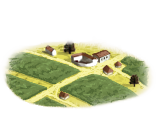

RTR: Imperium Surrectum
RTR: Imperium SurrectumHemp Production
3 levels, each replacing the one before it — you upgrade in place rather than building alongside.
Hemp Farm (Rural) → Hemp Plantation and Ropemaker (Rural) → Cordage Exports (Rural)
Levels at a glance
| Level | Cost | Build time | Minimum settlement | Upgrades to | Level | Cost | Build time | Minimum settlement | Upgrades to | ||
|---|---|---|---|---|---|---|---|---|---|---|---|
| Hemp Farm (Rural) | 600 | 2 | town | Hemp Plantation and Ropemaker (Rural) | Hemp Plantation and Ropemaker (Rural) | 1,800 | 3 | large town | Cordage Exports (Rural) | ||
 | Cordage Exports (Rural) | 5,400 | 5 | city | — |
Costs in denarii, build time in turns.
Hemp Farm (Rural)

A small hemp farm.
A wonderous fiberous plant has been steadily spreading west across the world, and what better use could it have than to make for some strong ropes. This small farm has specialized in growing hemp and it has become a boon to the fledgling town's economy. Old women sit in the sun and earn some coppers by weaving the hemp into ropes, small cords, bags, sails, fishing nets, bowstrings and sometimes even clothing.
In Iberia and northern Africa meanwhile the hemp plant has not yet appeared, however these areas have something even better, Esparto grass. In the semi-arid hills and plains these resilient prickly shrubs both grow naturally as well as being cultivated. The leaves are harvested with a special stick and after drying and weaving it makes good baskets and the very finest ropes for ships, as esparto ropes are resistant to salt and regular wear and tear. Besides baskets and ropes esparto is also made into slings such as the balearic slingers use!
| Cost | 600 denarii | Build time | 2 turns | Minimum settlement | town | Upgrades to | Hemp Plantation and Ropemaker (Rural) |
Requirements — all of these must hold before this level can be built.
- The region has Hemp
- Only one rural industry building per settlement: no other may already be built or being built here
- Government Building (Dependency, Indirect Rule, Direct Rule or Homeland)
What it does
- +6 taxable income
Hemp Plantation and Ropemaker (Rural)

A sizeable hemp farm with a ropemakers workshop.
Twisting ropes is no glorious profession but being a ropemaker at least bring the satisfaction of knowing ones creations are making other people's jobs a little easier. At least hemp is not a difficult crop to grow and the ropemaking itself also requires no high learning, but it does require deft hands and patience. The ropemaker has certainly acquired these attributes as his hands have twisted enough cordage for a fleet and a half!
In Iberia and northern Africa meanwhile the hemp plant has not yet appeared, however these areas have something even better, Esparto grass. In the semi-arid hills and plains these resilient prickly shrubs both grow naturally as well as being cultivated. The leaves are harvested with a special stick and after drying and weaving it makes good baskets and the very finest ropes for ships, as esparto ropes are resistant to salt and regular wear and tear. Besides baskets and ropes esparto is also made into slings such as the balearic slingers use!
| Cost | 1,800 denarii | Build time | 3 turns | Minimum settlement | large town | Upgrades to | Cordage Exports (Rural) |
Requirements — all of these must hold before this level can be built.
- The region has Hemp
- Government Building (Dependency, Indirect Rule, Direct Rule or Homeland)
What it does
- +12 taxable income
Show 4 effects that apply only in some circumstances
- +1 public order (happiness) — only when the region is not in the Iberian, Libyan or Numidian areas of recruitment and you play an Indian or Scythian faction
- Additional happiness as people of your culture enjoy using hemp for intoxication — only when the region is not in the Iberian, Libyan or Numidian areas of recruitment and you play an Indian or Scythian faction
- +1 trade income — only when the region is in the Iberian, Libyan or Numidian areas of recruitment
- Additional trade bonus due to esparto grass instead of hemp in Iberia, Mauretania and Libya — only when the region is in the Iberian, Libyan or Numidian areas of recruitment
Cordage Exports (Rural)

The ropes and sails made here now tie together our fleet and so help tie our empire together.
What started as a small hemp farm has now become a major industry supplying the naval equipment that our navy, the mercantile fleet and humble fishermen depend on. Like the Fates spin the the cord of life so here the fates of maritime communities all along our coasts are spun, and it must be said their product is a considerably more reliable than that of the Moirai.
In Iberia and northern Africa meanwhile the hemp plant has not yet appeared, however these areas have something even better, Esparto grass. In the semi-arid hills and plains these resilient prickly shrubs both grow naturally as well as being cultivated. The leaves are harvested with a special stick and after drying and weaving it makes good baskets and the very finest ropes for ships, as esparto ropes are resistant to salt and regular wear and tear. Besides baskets and ropes esparto is also made into slings such as the balearic slingers use!
| Cost | 5,400 denarii | Build time | 5 turns | Minimum settlement | city |
Requirements — all of these must hold before this level can be built.
- Local Market or a higher level is built here
- The region has Hemp
- No Cordage Exports (Rural) is built anywhere in your empire
- Direct Rule or Homeland
What it does
- +16 taxable income
- (Faction) Ports gain +1 special attack for ships and slingers (does not stack with local hemp, but can stack with pitch and timber on higher level ports)
Show 5 effects that apply only in some circumstances
- +2 public order (happiness) — only when the region is not in the Iberian, Libyan or Numidian areas of recruitment and you play an Indian or Scythian faction
- Additional happiness as people of your culture enjoy using hemp for intoxication — only when the region is not in the Iberian, Libyan or Numidian areas of recruitment and you play an Indian or Scythian faction
- +1 trade income — only when the region is not in the Iberian, Libyan or Numidian areas of recruitment
- +2 trade income — only when the region is in the Iberian, Libyan or Numidian areas of recruitment
- Additional trade bonus due to esparto grass instead of hemp in Iberia, Mauretania and Libya — only when the region is in the Iberian, Libyan or Numidian areas of recruitment